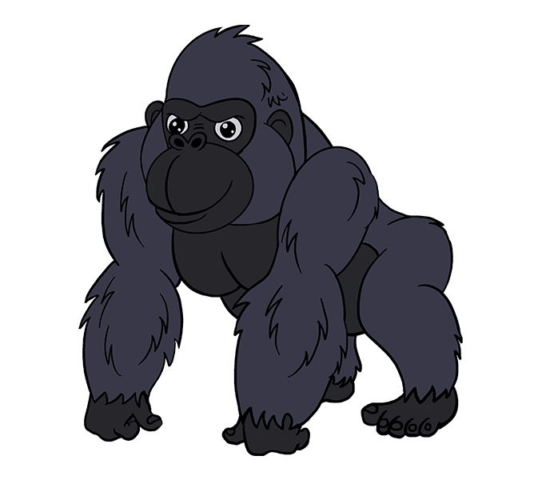

Gorilla - The gorilla, one of the four great apes, is the planet's largest primate. They are found in the cloud and rain forests of Central Africa. Biologists recognize two species, the eastern gorilla and the western gorilla, each of which has two subspecies. All gorilla species are listed as endangered by the International Union for the Conservation of Nature. Poaching, habitat destruction, climate change and infectious diseases, like the Ebola virus, threaten the gorilla's survival.
Gorilla Tiger - The tiger is the largest cat species, most recognizable for their pattern of dark vertical stripes on reddish-orange fur with a lighter underside. The species is classified in the genus Panthera with the lion, leopard, jaguar, and snow leopard. Tigers are apex predators, primarily preying on ungulates such as deer and bovids. They are territorial and generally solitary but social animals, often requiring large contiguous areas of habitat that support their prey requirements.
Tiger
Hippopotamus - Hippopotamuses love water, which is why the Greeks named them the “river horse.” Hippos spend up to 16 hours a day submerged in rivers and lakes to keep their massive bodies cool under the hot African sun. Hippos are graceful in water, good swimmers, and can hold their breath underwater for up to five minutes.
HippoSloth - Sloths are arboreal mammals noted for slowness of movement and for spending most of their lives hanging upside down in the trees of the tropical rainforests of South America and Central America. The six species are in two families: two-toed sloths and three-toed sloths. In spite of this traditional naming, all sloths actually have three toes. The two-toed sloths have two digits, or fingers, on each forelimb.
sllothMonkey - Monkeys are haplorhine primates, a group generally possessing tails and consisting of about 260 known living species. Many monkey species are tree-dwelling (arboreal), although there are species that live primarily on the ground, such as baboons. Most species are also active during the day (diurnal). Monkeys are generally considered to be intelligent, particularly Old World monkeys.
MonkeyParrot - Parrots, found in most tropical and subtropical regions. Characteristic features of parrots include a strong, curved bill, an upright stance, strong legs, and clawed zygodactyl feet. Many parrots are vividly coloured, and some are multi-coloured. Most parrots exhibit little or no sexual dimorphism in the visual spectrum. The greatest diversity of parrots is in South America and Australasia. Parrot
Orangutan
Butterfly
Toad
Elephant